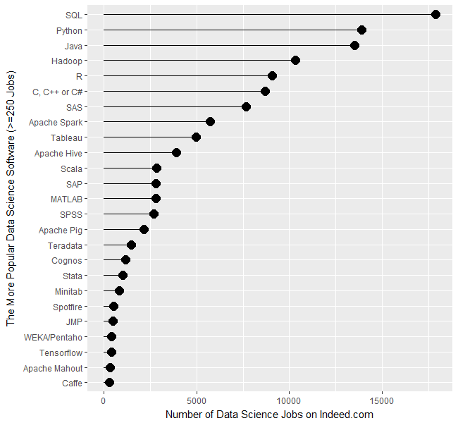
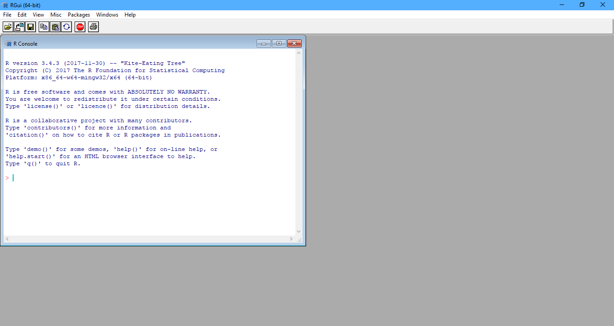
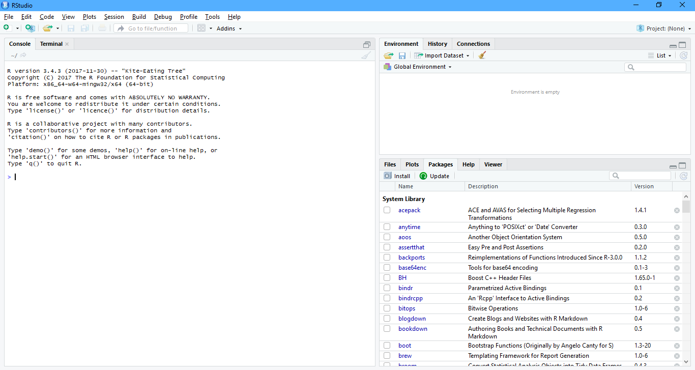

2*sqrt(pi)+log(8,2)[1] 6.544908GNU R to interpretowany język programowania oraz środowisko do obliczeń statystycznych i wizualizacji wyników [Wikipedia 2017].
Robert A. Muenchen - The Popularity of Data Science Software

Bazowa wersja R jest do pobrania ze strony r-project.org.

RStudio to zintegrowane środowisko programistyczne (IDE) dla języka R dostępne za darmo na stronie RStudio.

Z R można także korzystać w Microsoft Visual Studio.
R jest wrażliwy na wielkość liter.
Separatorem części dziesiętnej liczby jest kropka.
W codziennej pracy RStudio jest wygodniejsze, jednak długotrwałe obliczenia lepiej uruchamiać w trybie wsadowym w zwykłym R.
Ważnym pojęciem w R jest katalog roboczy (ang. working directory), który określa gdzie zostaną zapisane pliki, wykresy, zbiory, itp. jeśli nie podamy dokładnej ścieżki do pliku. Katalog roboczy przypisuje się z wykorzystaniem funkcji setwd("ścieżka do katalogu"), a jego wartość można sprawdzić funkcją getwd(). W RStudio przypisanie katalogu roboczego odbywa się w momencie utworzenia projektu.
Katalog na dysku, w którym znajdują się wszystkie pliki projektu wraz z plikiem o rozszerzeniu .Rproj skojarzonym z RStudio.
Dostęp do pomocy odnośnie wybranej funkcji można uzyskać na dwa sposoby. Pierwszym z nich jest poprzedzenie nazwy funkcji w konsoli znakiem zapytania np. ?getwd lub wywołanie funkcji help na nazwie funkcji help("getwd"). Drugim sposobem jest umieszczenie kursora w dowolnym miejscu nazwy funkcji i wciśnięcie klawisza F1.
Internet - przede wszystkim stackoverflow.
Real programmers don’t comment their code. If it was hard to write it should be hard to understand.
Dobrze napisany kod jest czytelny bez komentarzy. W R komentarze rozpoczynają się od symbolu #. Skrót klawiaturowy w RStudio to CTRL + SHIFT + C (do wstawiania i usuwania komentarzy).
RStudio ma zaimplementowaną funkcję podpowiadania składni. Listę możliwych funkcji i obiektów wywołuję się klawiszem TAB lub CTRL + SPACJA po wpisaniu co najmniej jednej litery. Kolejne naciśnięcie TAB lub ENTER powoduje uzupełnienie kodu o wybraną funkcję lub obiekt.
Programy w R możemy tworzyć jako skrypty w pliku tekstowym o rozszerzeniu .R lub wywoływać polecenia bezpośrednio w konsoli. Kod programu napisanego w skrypcie przekazywany jest do konsoli. Gotowość do pracy R sygnalizuje w konsoli znakiem zachęty >. Jeśli podczas wykonywania programu w konsoli pojawi się znak + to oznacza oczekiwanie na kompletny kod - brak domkniętego nawiasu, cudzysłowia, itp.:
> getwd(
+ W powyższym przykładzie brakuje prawego nawiasu. Dodanie brakującego kodu spowoduje wykonanie przekazanego polecenia. Z kolei wciśnięcie klawisza ESC spowoduje przerwanie wykonywanie programu i powrót do znaku zachęty. Zawartość konsoli można wyczyścić stosując kombinację klawiszy CTRL + L.
Jeśli w pamięci znajdują się jakieś obiekty (zakładka Environment) to RStudio przy zamykaniu programu zapyta o zapisanie tych obiektów do pliku .RData. Jeżeli zdecydujemy się na tą propozycję to po ponownym uruchomieniu projektu obiekty znajdujące się w pliku .RData zostaną automatycznie wczytane do pamięci.
Można także samodzielnie tworzyć pliki o rozszerzeniu .RData z wykorzystaniem funkcji save():
save(obiekt1, obiekt2, obiekt3, file = "nazwa_pliku.RData")Wczytanie obiektów z takiego pliku do pamięci odbywa się z zastosowaniem funkcji load():
load("nazwa_pliku.RData")
Podstawowe możliwości R są dosyć ograniczone. Rozszerzają je pakiety, których obecnie jest ponad 12 tysięcy. Można je przeglądać według kategorii w CRAN Task Views lub w wygodnej wyszukiwarce METACRAN i rdrr.io.
Działania matematycznie w R:
| Operator | Operacja |
|---|---|
| + | dodawanie |
| - | odejmowanie |
| * | mnożenie |
| / | dzielenie |
| ^ lub ** | potęgowanie |
| sqrt() | pierwiastkowanie |
W R istnieje także stała wbudowana pi przechowująca wartość liczby pi.
Funkcja factorial(x) zwraca silnię (znak wykrzyknika !) z podanej wartości x, a sign(x) sprawdza znak wyrażenia i zwraca odpowiednio wartość -1 jeśli wyrażenie jest ujemne, 0 jeśli jest równe 0 i 1 dla wyrażeń dodatnich.
Funkcja exp(x) zwraca wartość wyrażenia \(e^x\), natomiast funkcja log(x) zwraca logarytm z podanej liczby. Domyślnie jest to logarytm naturalny, ale można zmienić podstawę podając wartość argumentu base.
Funkcja abs(x) zwraca wartość bezwzględną (absolutną) wyrażenia.
Ćwiczenie
Oblicz wartość wyrażenia: \(2\cdot \sqrt{\pi} + log_28\).
Rozwiązanie:
2*sqrt(pi)+log(8,2)[1] 6.544908Zadania
Oblicz wartość wyrażeń: